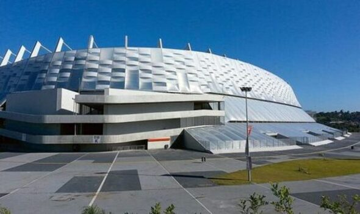
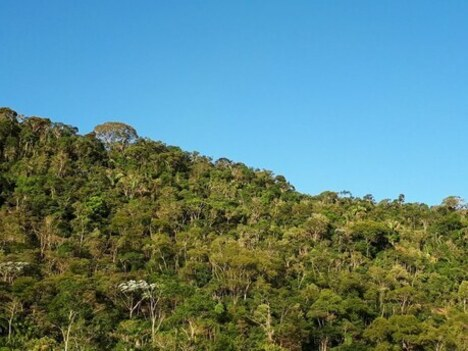
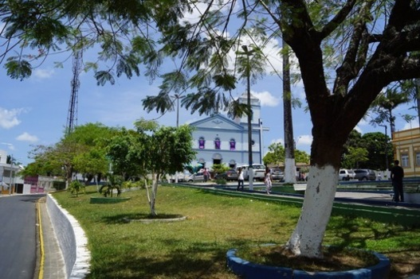
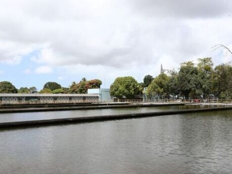

Explore São Lourenço da Mata
Descubra as maravilhas desta encantadora cidade. São Lourenço da Mata é famosa por sua cultura, história e belezas naturais. Explore nossos principais pontos turísticos abaixo.
Pontos Turísticos
- Estádio Arena Pernambuco
- Parque Natural Municipal da Jaqueira
- Igreja Matriz de São Lourenço
- Rio Capibaribe




Prepare-se para uma viagem incrível e explore todos os tesouros que São Lourenço da Mata tem a oferecer!